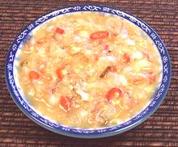

 |
Sambal CincalokMalaysia | ||||
| Makes: Effort: Sched: DoAhead: |
1/2 cup * 15 min Best |
Prounounced "chin-cha-lo", this Malaysian condiment is used as a dipping sauce for fried or grilled fish, as an ingredient in vegetable dishes, and as a marinade for meats. It is definitely a "high impact" sauce with plenty of flavor. | |||
|
|
5 12 2 1 1 2 |
T oz T T t |
Cincalok (1) Thai Chili red (2) Shallots Ginger root Lime Juice Sugar |
Make: - (15 min)
|